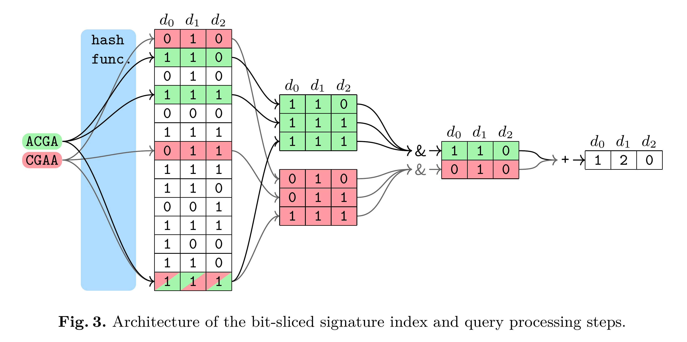

COBS: A Compact Bit-Sliced Signature Index
COBS (COmpact Bit-sliced Signature index) is a cross-over between an inverted index and Bloom filters. Our target application is to index k-mers of DNA samples or q-grams from text documents and process approximate pattern matching queries on the corpus with a user-chosen coverage threshold. Query results may contain a number of false positives which decreases exponentially with the query length and the false positive rate of the index determined at construction time. COBS’ compact but simple data structure outperforms other indexes in construction time and query performance with Mantis by Pandey et al. in second place. However, unlike Mantis and other previous work, COBS does not need the complete index in RAM and is thus designed to scale to larger document sets.
More information about COBS is presented in our current research paper Timo Bingmann, Phelim Bradley, Florian Gauger, and Zamin Iqbal. “COBS: a Compact Bit-Sliced Signature Index”. In: 26th International Symposium on String Processing and Information Retrieval (SPIRE). pages 285-303. Spinger. October 2019. preprint arXiv:1905.09624.
See the tutorial page on how to use COBS in python scripts.
Table of Contents
- Tutorial for COBS Python Interface
- COBS Python API Reference
- cobs_index.FileType
- cobs_index.DocumentEntry
- cobs_index.DocumentList
- cobs_index.ClassicIndexParameters
- cobs_index.CompactIndexParameters
- cobs_index.Search
- cobs_index.classic_construct
- cobs_index.classic_construct_list
- cobs_index.compact_construct
- cobs_index.compact_construct_list
- cobs_index.disable_cache